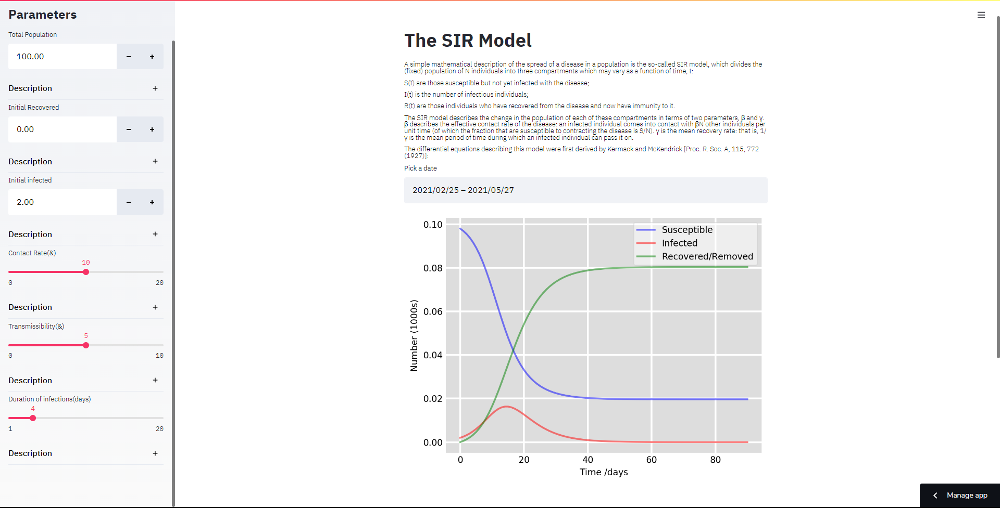
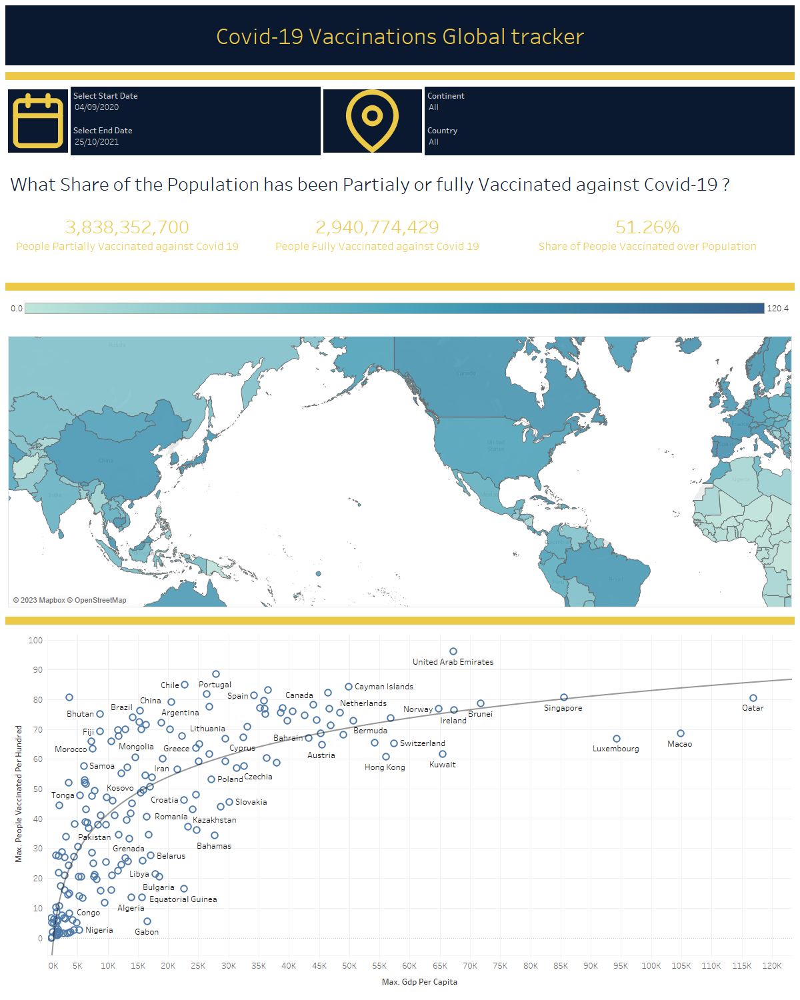
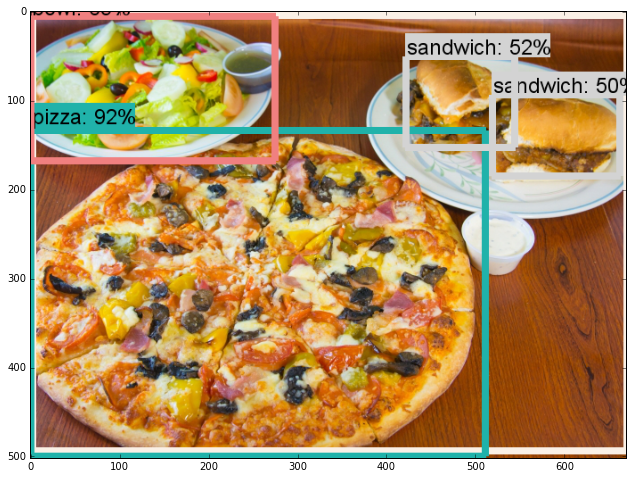

I am data scientist living in the UK, I have a strong passion for data analytics, machine learning, and
artificial intelligence, along with a keen interest in all related fields.
about me{}
I am currently a freelance data analyst. I have completed a Masters in Data science from the Robert gordon university
Here are some technologies i am
working with:
TensorFlow
Python
Google Cloud Platform
Keras, Sklearn
Tableu
Excel, DAX, Power BI
Html, CSS
Unity C#
things i've built{}

SIR model
During Covid i built a web application that implements the SIR (Susceptible-Infectious-Recovered) model, a mathematical model that describes the spread of infectious diseases. The web application allows users to input various parameters to simulate the spread of the disease.
Pyhton Streamlit

Global Vaccine Report
During Vaccinations i built an interactive Tableu Dashboard to visualize the number of People Fully vaccinate and Partialy vaccinatedfor each Country.I visualised the trend lines showing vaccinations and GDP Per capita to show Vaccine Dispaarity
Tableu

TensorFlow Food Model
Using TensorFlow I have successfully developed and trained multiple Tensorflow models for categorizing a wide range of food images.
Leveraging the power of Google's state-of-the-art EfficientNet Model and advanced techniques such as scale up and transfer learning, I have achieved a better accuracy than the DeepFood Paper.